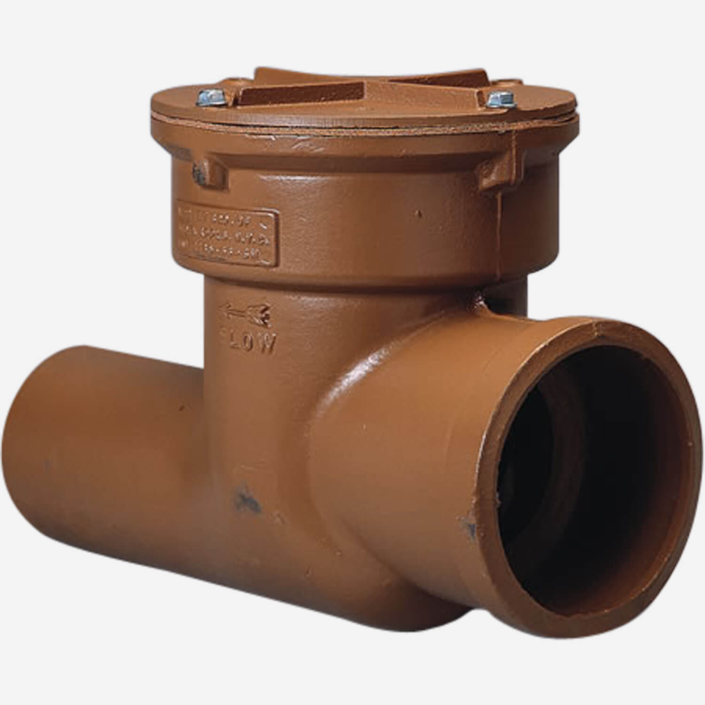

Everything You Need to Know About Backwater Valves
When it comes to protecting your home from sewage backups and costly water damage, one of the most important but often overlooked plumbing devices is the backwater valve. Whether you are a homeowner, a renter, or planning a renovation, understanding how backwater valves work can save you headaches and money.
What is a Backwater Valve?
A backwater valve is a plumbing device installed in your home's sewer line to prevent sewage from flowing back into your property. In the event of a heavy rainfall, flood, or sewer system backup, wastewater can reverse its flow and enter your basement or lower floors. The backwater valve acts as a one-way gate, allowing sewage to flow out but not back in.
How Does a Backwater Valve Work?
Backwater valves typically contain a flap or gate that opens under normal flow conditions to allow wastewater to leave your home. If the sewer system becomes overloaded, the flap automatically closes, preventing backflow.
There are two main types:
- Manual Backwater Valves – Require you to manually close the flap in anticipation of heavy rain or sewer maintenance.
- Automatic Backwater Valves – Operate without intervention, automatically closing when backflow is detected.
Automatic valves are more common in modern installations and provide reliable protection even when no one is home.
Why You Need a Backwater Valve
Sewage backups can cause severe damage, including:
- Flooding in basements or low-level areas
- Contamination of floors, walls, and furniture
- Health risks from bacteria and pathogens
- Costly cleanup and repair bills
Installing a backwater valve can significantly reduce the risk of these problems, making it a valuable investment for any property connected to a municipal sewer system.
Where is a Backwater Valve Installed?
Backwater valves are usually installed in the main sewer line of your home, typically in the basement or crawl space. The exact location depends on your plumbing layout and local building codes.
Important: Proper installation requires cutting into the sewer line, so this is typically a job for a licensed plumber. Improper installation can cause more harm than good.
Maintenance Tips
Even the best backwater valve requires periodic maintenance to ensure proper function:
- Inspect the valve at least once a year for debris or corrosion.
- Clean the flap or gate to prevent obstruction.
- Test the valve by gently lifting the flap to ensure it moves freely.
- Check after heavy rain or sewer work to make sure it hasn’t been dislodged.
- Some models come with removable covers, making cleaning much easier.
Cost of Installation
The cost of a backwater valve depends on the type and installation complexity. On average:
Automatic backwater valves: $500–$1,200 installed
Manual backwater valves: $250–$700 installed
While this may seem like a significant expense, it is far less than the cost of water damage restoration or replacing ruined possessions.
Expert Recommendation : Best Backwater Valve in 2025
The Smith® Series 7012 Sewer Backwater Valve is a heavy-duty, cast-iron valve designed to protect homes and buildings from sewer backflow. Featuring a durable Duco-coated cast-iron body and a bronze flapper, it allows wastewater to flow out while preventing reverse flow from municipal sewers.
Its bolted cover provides easy access for inspection and maintenance, and it comes in multiple sizes and connection types to fit a variety of sewer systems. Ideal for basements, low-lying areas, or any property at risk of sewer backups, the Series 7012 combines reliability, durability, and service-friendly design, making it a top choice for long-term backflow protection.